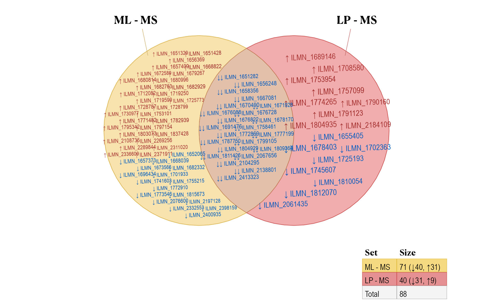
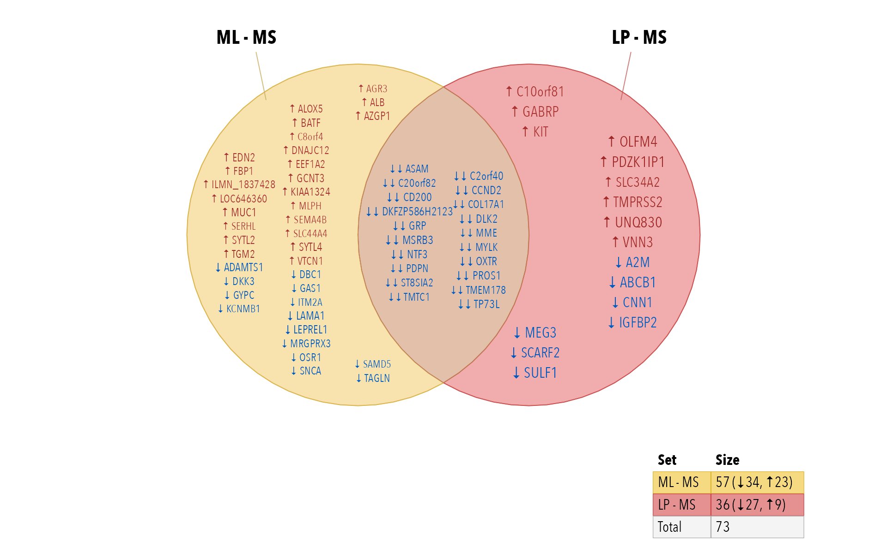
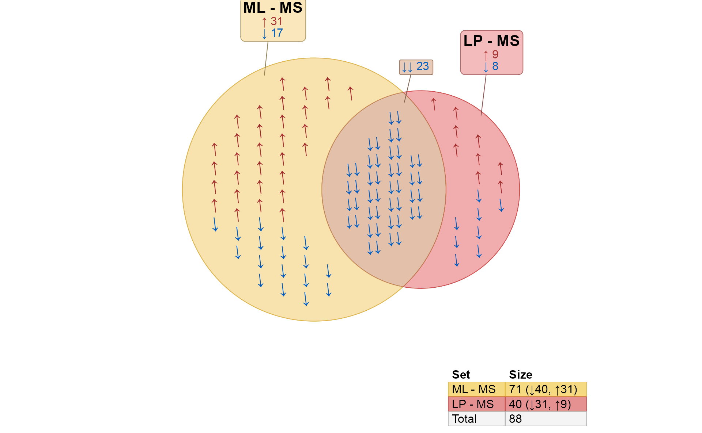
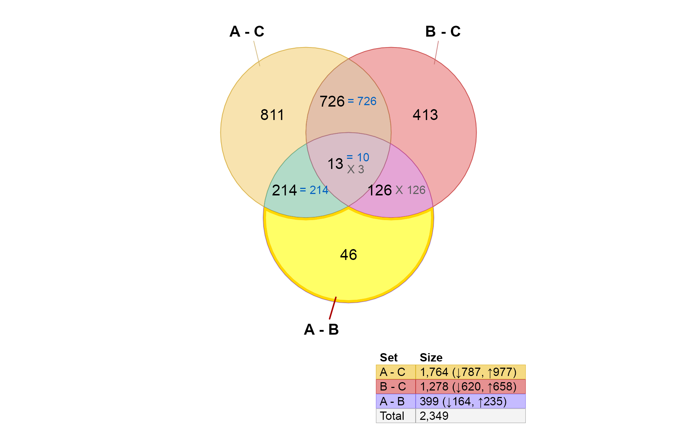
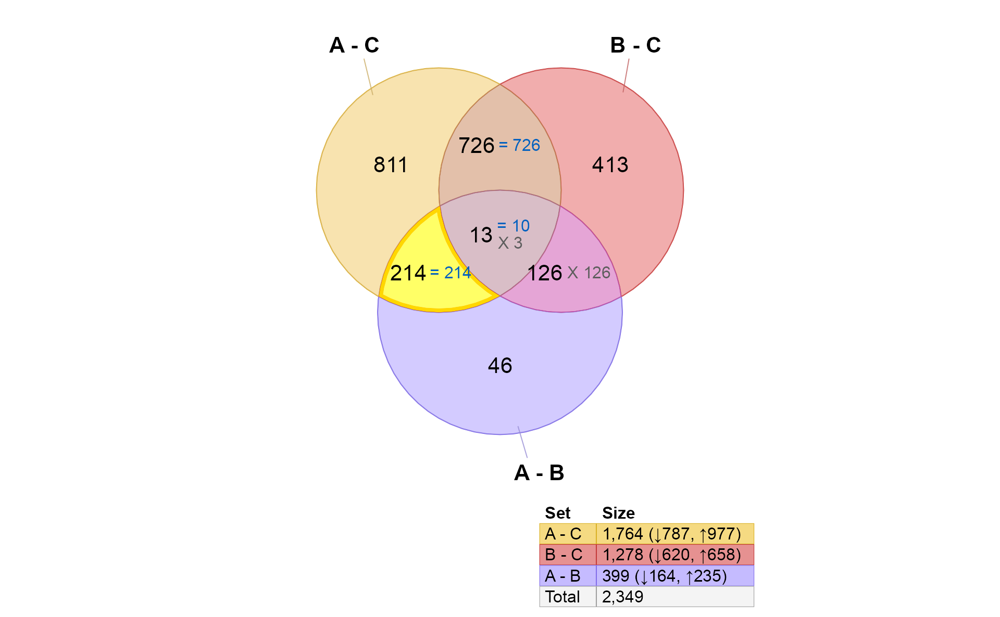
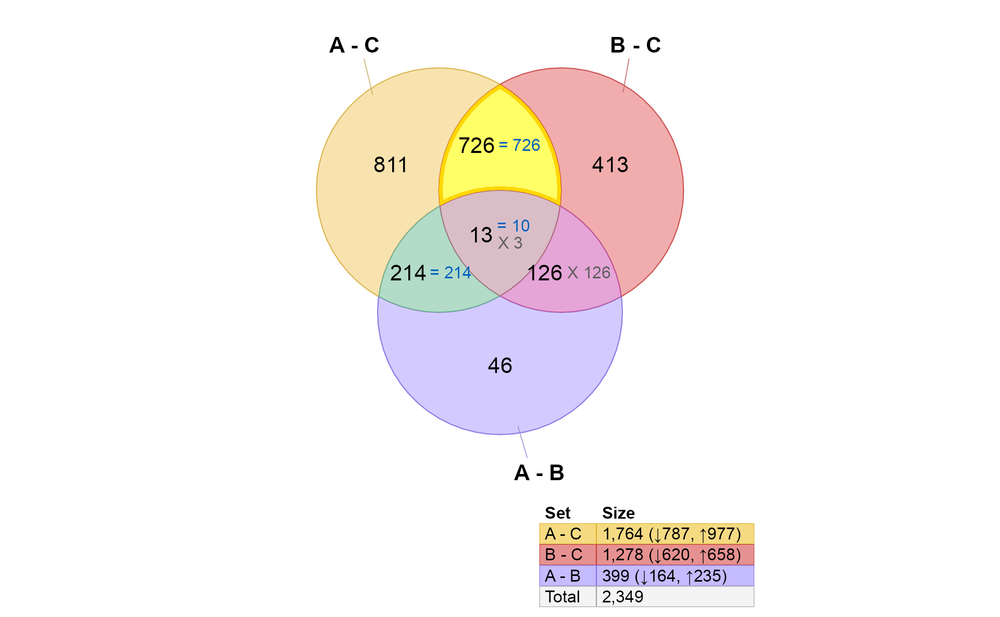
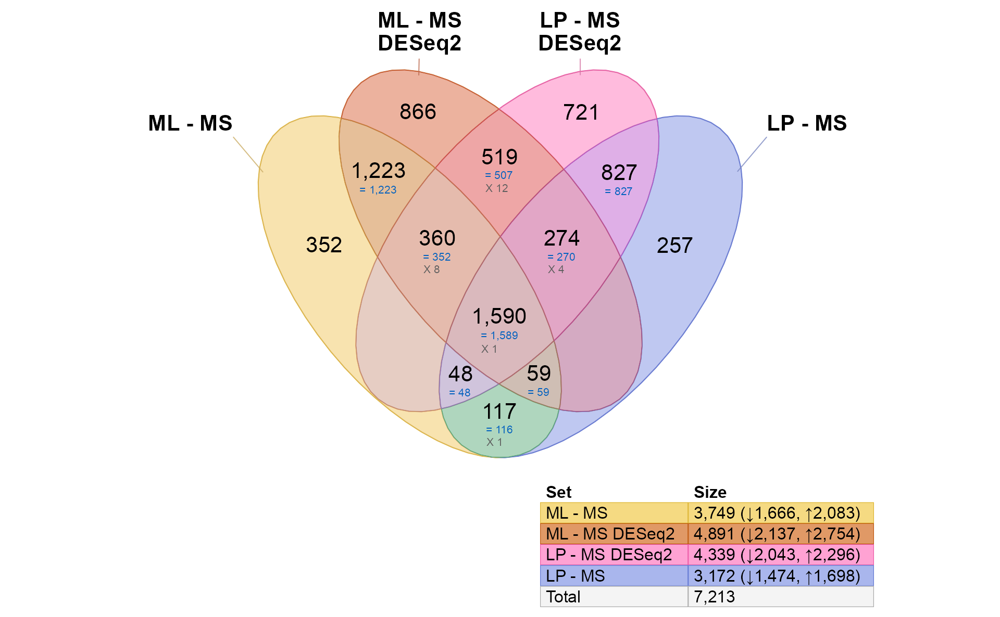

Venndir with Gene Expression Data
Source:vignettes/venndir_gene_expression.Rmd
venndir_gene_expression.RmdVenndir was driven by gene expression analysis, which contains
up/down directionality. Here are some examples showing how gene
expression data can be used in venndir.
The examples include limma and DESeq2 as
two common example workflows.
Generic example
The venndir::make_venn_test() function is useful to
generate test data, just to create a Venn diagram.
setlist <- make_venn_test(2500, 3,
sizes=c(400, 500, 200),
do_signed=TRUE)
venndir(setlist, overlap_type="agreement")
Venndir with limma results
Illumina Case Study
The limma package provides an extensive set of gene
expression data analysis tools. The steps below reproduce the
Limma Users Guide example "Illumina Use Case"
in Section 17.3. This example requires data available at https://bioinf.wehi.edu.au/marray/IlluminaCaseStudy
copied to the current working directory.
For the sake of this example, the steps assume the data is located in
a folder [HOME]/IlluminaCaseStudy, where
[HOME] is the user home directory.
illuminadir <- "~/IlluminaCaseStudy";
do_limma <- FALSE;
do_deseq2 <- FALSE;
if (suppressPackageStartupMessages(require(limma)) && dir.exists(illuminadir)) {
do_limma <- TRUE;
}
if (do_limma && suppressPackageStartupMessages(require(DESeq2))) {
do_deseq2 <- TRUE;
}
if (do_limma) {
targets <- readTargets(path=illuminadir)
# import Illumina data
x <- read.ilmn(files="probe profile.txt.gz",
ctrlfiles="control probe profile.txt.gz",
other.columns="Detection",
path=illuminadir)
# define expressed probes
y <- neqc(x)
expressed <- rowSums(y$other$Detection < 0.05) >= 3;
# subset for expressed probes
y <- y[expressed,]
# calculate within-patient correlations
ct <- factor(targets$CellType)
design <- model.matrix(~0 + ct);
colnames(design) <- levels(ct);
dupcor <- duplicateCorrelation(y,
design,
block=targets$Donor);
dupcor$consensus.correlation;
# fit linear model, paired by patient, with correlations
fit <- lmFit(y,
design,
block=targets$Donor,
correlation=dupcor$consensus.correlation);
# define contrasts
contrasts <- makeContrasts(ML-MS,
LP-MS,
ML-LP,
levels=design)
# fit contrasts
fit2 <- contrasts.fit(fit, contrasts);
# eBayes
fit2 <- eBayes(fit2, trend=TRUE)
}
#> Reading file ~/IlluminaCaseStudy/probe profile.txt.gz ... ...
#> Reading file ~/IlluminaCaseStudy/control probe profile.txt.gz ... ...lmFit() or eBayes() to incidence matrix
The function limma::decideTests() will convert the
output MArrayLM object (from limma::lmFit() or
limma::eBayes()), first applying thresholds for adjusted
P-value and log2 fold change.
The output has class TestResults and is a signed
incidence matrix! The values are already: c(-1, 0, 1),
which is perfect!
Take a look at the output:
if (do_limma) {
# decideTests() creates a signed incidence matrix
fit2decide <- decideTests(fit2,
p.value=0.01, lfc=log2(1),
method="global");
print(fit2decide)
}
#> TestResults matrix
#> Contrasts
#> ML - MS LP - MS ML - LP
#> ILMN_2055271 0 0 0
#> ILMN_1653355 0 0 0
#> ILMN_1787689 0 0 0
#> ILMN_1745607 -1 -1 0
#> ILMN_1735045 0 0 0
#> 24686 more rows ...Examples by Input Type
Incidence matrix
A signed incidence matrix can be used directly, it is automatically
converted to a signed list.
For simplicity, we will show only the first two contrasts, using
argument: sets=c(1, 2)

Signed set list
The signed incidence matrix can be converted to a signed set list
using im_value2list().
if (do_limma) {
limmalist <- im_value2list(fit2decide);
venndir(limmalist, sets=c(1, 2));
}A few features are noticeable:
The
limmacontrasts"ML - MS"and"LP - MS"are shown, both involve a comparison “versus MS”. It compares the ML differences from MS, to the LP differences from MS.The numbers are statistically significant changes given the statistical thresholds used by
limma::decideTests().There is fairly high overlap between these gene lists,
1,582are shared.-
All of the shared changes have the same direction of change in
ML-MScompared withLP-MS.-
740are up in both comparisons. -
842are down in both comparisons.
-
Exercise for the reader: Consider using more lenient statistical thresholds, and test the overlap and directional concordance. Would you expect more lenient results to have the same concordance, or less concordance?
Customizing the Diagram
Proportional Venn (Euler)
The data can be drawn with proportional circles, which is a Euler diagram.
For this diagram, we plot sets=c(1, 3) mostly because
these are more visually interesting.

Customizing the labels
Sometimes proportional circles have tall-skinny overlap regions, so
you can arrange the signed labels using argument:
template="tall".
For kicks, we will also enlarge the main count labels using the
second value in font_cex=c(1.2, 1.5, 0.8). The first value
controls the set label, the second controls the main count label, the
third controls the signed count labels.
if (do_limma) {
venndir(limmalist, sets=c(1, 3), proportional=TRUE,
font_cex=c(1, 1.5, 0.8),
template="tall");
}<img src=“/Users/jamesward/Projects/Ward/venndir/docs/articles/venndir_gene_expression_files/figure-html/limma_3p_tall-1.png” alt=“Venndir figure shown as a proportional Euler diagram as before, except using ‘template=“tall”’ which arranges signed counts below the main counts.” width=“960” />
overlap_type=“agreement”
The argument overlap_type="agreement" will summarize
counts by agreement "=", or disagreement
"X".
Notice that sets 2 and 3 are predominantly discordant. It may be
confusing, but for this type of analysis, and these comparisons, this
result is expected. The group "LP" is the test group in the
first comparison, and "LP" is the control group in the
second comparison.
if (do_limma) {
venndir(limmalist, sets=c(2, 3), proportional=TRUE,
font_cex=c(1, 1.5, 0.8),
template="tall",
overlap_type="agreement");
}<img src=“/Users/jamesward/Projects/Ward/venndir/docs/articles/venndir_gene_expression_files/figure-html/limma_4-1.png” alt=“Venndir figure shown as a proportional Euler diagram, with the option ‘overlap_type=“agreement”’ which summarizes the signed overlaps as agreeing, or disagreeing in direction.” width=“960” />
overlap_type=“each”
The argument overlap_type="each" will display counts for
each combination of up and down. This option gives the most detail, but
can sometimes be challenging to label clearly.
if (do_limma) {
venndir(limmalist, sets=c(2, 3),
font_cex=c(1, 1.5, 0.8),
template="tall",
overlap_type="each");
}<img src=“/Users/jamesward/Projects/Ward/venndir/docs/articles/venndir_gene_expression_files/figure-html/limma_5-1.png” alt=“Venndir figure shown as a proportional Euler diagram, with the option ‘overlap_type=“each”’ which tabulates the signed counts for each combination of up and down directions. Again the option ‘template=“tall”’ is used, to arrange signed counts below the main overlap counts.” width=“960” />
Item labels
It is sometimes useful to show item labels inside the Venn diagram. However please don’t try it with 3,000+ labels!
For this example, we apply a stringent statistical filter to reduce the number of hits.
Sign Item label
if (do_limma) {
# increase stringency of statistical filtering
fit2decide2 <- decideTests(fit2,
p.value=1e-4,
lfc=5);
# increase stringency of statistical filtering
limmalist2 <- im_value2list(fit2decide2);
# display item labels
venndir(fit2decide2,
sets=c(1, 2),
show_labels="Ni",
item_degrees=2,
fontfamily="ArialNarrow",
show_items="sign item")
}
Gene labels
This step “gets into the weeds” so to speak, but is more interesting
than printing Illumina probe names. There is a little helper function
collapse_im() intended to collapse an incidence matrix by
row groups, which is a fancy way of saying “Make it per-gene”.
- Convert Illumina probe names to Illumina gene symbols.
- Summarize the direction per gene with
collapse_im().
The method prioritizes non-zero values, so that any evidence of a hit will be retained, using the majority direction.
if (do_limma) {
# filter for non-zero values
fit2decide2g <- subset(fit2decide2, rowSums(abs(fit2decide2)) > 0)
match2g <- match(rownames(fit2decide2g), rownames(y))
y_symbol <- ifelse(y$genes$SYMBOL %in% "",
rownames(y),
y$genes$SYMBOL)
row_genes <- y_symbol[match2g]
fit2gene <- collapse_im(fit2decide2g, row_genes)
# display item labels
venndir(fit2gene,
xyratio=2.2,
# fontfamily="ArialNarrow",
fontfamily="Avenir Next Condensed",
sets=c(1, 2),
show_labels="Ni",
show_items="sign item")
}
Arrow labels
When there are many items, sometimes it’s nice to see just the arrows. It saves space, while also filling the polygon with the color associated with each direction.
Use argument: show_items="sign"
if (do_limma) {
vo6s <- venndir(fit2decide2,
sets=c(1, 2),
label_style="shaded box",
proportional=TRUE,
show_labels="NcSi",
show_items="sign",
item_cex=2,
item_degrees=7,
max_items=1000);
}
Three-way directional Venn
The examples above purposefully used only two contrasts, because those two contrasts show very high concordance.
Three-group analysis
One common type of analysis involves three experimental groups. For example:
- Control
- Treatment A
- Treatment B
The typical contrasts are:
- A - Control
- B - Control
- A - B
When creating a three-way Venn diagram, the results are also fairly
straightforward. When the directionality is included, it can be more
confusing, but also potentially much more informative. Note that the
contrast (3) may be written "A - B" or
"B - A", and the order affects the directionality.
if (do_limma) {
fit2decide1 <- decideTests(fit2,
p.value=1e-3,
lfc=log2(1.5));
colnames(fit2decide1) <- c("A - C",
"B - C",
"A - B")
v <- venndir(fit2decide1,
sets=c(1, 2, 3),
overlap_type="agreement");
}<img src=“/Users/jamesward/Projects/Ward/venndir/docs/articles/venndir_gene_expression_files/figure-html/venn_compare_0-1.png” alt=“Venndir 3-way figure showing counts with ‘overlap_type=“agreement”’. Each set represents the hits from one statistical contrast, after filtering by P-value and log fold change.” width=“960” />
There are a few potential scenarios:
- Treatment A does not affect the same genes as B. Few overlaps.
- Treatment A affects similar genes as B, but not with high concordance.
- Treatment A affects similar genes as B, with high concordance.
An interesting question is whether A and B are different from each
other. This is contrast (3) above: "A - B"
We’ll use the Venndir highlight feature to walk through the logic.
if (do_limma) {
v2 <- venndir::highlight_venndir_overlap(v,
overlap_set="A - B")
plot(v2)
}
These 46 hits are different between A and B, but are not independently different when comparing A to C, nor B to C. What does that mean?
- It suggests that these are moderate treatment effects, because they aren’t statistically significant when comparing to Control.
- It also suggests that the moderate effects are in opposite direction in A and B compared to Control. (It is possible that Control has higher variability for these genes, but for now let’s assume variability is reasonably consistent for all groups.)
Taken together, one might expect the number here (46) to be lower
than those for "A - C" or "B - C" simply
because they are only hits when comparing A and B
directly. If they were changes also seen in "A - C" they
would appear in the section 214.
if (do_limma) {
v3 <- venndir::highlight_venndir_overlap(v,
overlap_set="A - C&A - B")
plot(v3)
}
-
These 214 hits are “distinctively A”, in that they are present
"A - C"and"A - B". There are two explanations for concordance or discordance here:- Note these hits are not present in
"B - C"therefore, they could be considered “uniquely A”. - High concordance is expected, and suggests that these “A” changes are unique to “A”, and have significantly stronger effect in “A” than in “B”.
- Discordance really should be extremely unlikely, since it would
require changes between
"A - B"which are also not"B - C"changes.
- Note these hits are not present in
if (do_limma) {
v4 <- venndir::highlight_venndir_overlap(v,
overlap_set="B - C&A - B")
plot(v4)
}
- These 126 hits are “distinctively B”, completely analogous to the “distinctively A” example above.
However, note that all hits are discordant. It may be confusing at
first, however, this effect is due to the order of the comparisons. “B”
is the test group in "B - C", but “B” is the control group
in "A - B".
if (do_limma) {
v5 <- venndir::highlight_venndir_overlap(v,
overlap_set="A - C&B - C")
plot(v5)
}
- These 726 hits are shared by A and B compared with Control. The key question is whether the hits are concordant. This example represents the driving reason Venndir was created.
There are two conceptual results:
-
Overlap
- High overlap suggests “the same components are involved”.
- Low overlap suggests “not many of the same components are involved.”
-
Directional concordance
- High concordance suggests the components are affected in the same way. This outcome suggests ‘A’ and ‘B’ have similar biological effect.
- Mixed concordance suggests that components are not affected similarly. In fact, this outcome argues against ‘A’ and ‘B’ having similar biological effects.
- Low concordance suggests the components are affected in the opposite way. (This outcome may be equally compelling.) This outcome suggests ‘A’ and ‘B’ have opposite biological effects, for example disease and treatment.
if (do_limma) {
v6 <- venndir::highlight_venndir_overlap(v,
overlap_set="A - C&B - C&A - B")
plot(v6)
}In my opinion, the concordance here is not useful to interpret. It
may be interesting to display overlap_type="each".
if (do_limma) {
veach <- venndir(fit2decide1,
do_plot=FALSE,
sets=c(1, 2, 3),
overlap_type="each");
v6each <- venndir::highlight_venndir_overlap(veach,
overlap_set="A - C&B - C&A - B")
plot(v6each)
}<img src=“/Users/jamesward/Projects/Ward/venndir/docs/articles/venndir_gene_expression_files/figure-html/venn_compare_AC_BC_AC_each-1.png” alt=“Venndir figure as in the previous figure, highlighting the three-way overlap between ‘A - C’, ‘B - C’, and ‘A - B’. This figure uses ‘overlap_type=“each”’ which shows each combination of up and down. All 13 hits are concordant in the first two contrasts, and only 3 hits are discordant in the third contrast. The pattern up-up-down suggests that the effects are shared in A and B compared to C, and that the magnitude in B is significantly greated in B.” width=“960” />
-
This plot is mainly useful when A and B have concordant effects compared with Control.
- When A and B are concordant, results should typically begin
^^orvv. - The third arrow indicates the contrast with higher magnitude.
- For example
^^^is up in A-C, up in B-C, and higher in A-B. Therefore A has a greater effect (up) than B. - For example
vvvis down in A-C, down in B-C, and even lower in A-B. Therefore A has a greater effect (down) than B. - However
^^vis up in A-C, up in B-C, and lower in A-B. Therefore B has a greater effect (up) than A. - Similarly
vv^is down in A-C, down in B-C, and higher in A-B. Therefore B has a greater effect (down) than A.
- When A and B are concordant, results should typically begin
-
When A and B are discordant, the third arrow should match the first arrow, and is therefore not informative.
-
^v^is up in A-C, down in B-C. Therefore when comparing ‘A-B’ the direction must also be up. -
v^vis down in A-C, up in B-C. Therefore when comparing ‘A-B’ the direction must also be down.
-
-
To state it clearly, there should never be a scenario with
^vvorv^^for the contrasts A-C, B-C, A-B. If this pattern occurs, it suggests two possibilities:- The contrasts are reversed, for example
'B-A'instead of'A-B'. This is fine, but adjust the expectations accordingly. - There may be high variability in the data, causing the estimated directions to be unstable. It may occur when using imputed data in place of missing or sparse data, or when there are outlier measurements which are order of magnitude (10-fold or more) different than typical expected results.
- The contrasts are reversed, for example
Venndir with DESeq2 results
The same data is processed using DESeq2, with the caveat that this is Illumina microarray data - not RNA-seq data as intended for DESeq2. This example is purely to demonstrate the mechanics of the process.
if (do_limma) {
# DESeq2 DataSet
targets$DonorNum <- factor(paste0("E", targets$Donor))
targets$CellType <- factor(targets$CellType)
countData <- round(2^(y$E) - 1);
countData[] <- as.integer(countData)
dds <- suppressMessages(
DESeq2::DESeqDataSetFromMatrix(
countData=countData,
rowData=y$genes,
colData=targets,
design=~0 + CellType + DonorNum)
)
# run DESeq
dds <- DESeq2::DESeq(dds)
# calculate contrasts
use_contrasts <- contrasts[c(1, 2, 3, 4, 4, 4), ];
rownames(use_contrasts) <- c(paste0("CellType", rownames(contrasts)),
tail(resultsNames(dds), 2))
# iterate each contrast to produce DESeqResults
res_list <- lapply(jamba::nameVector(colnames(use_contrasts)),
function(i){
DESeq2::results(dds,
saveCols="SYMBOL",
contrast=use_contrasts[, i])
})
# filter for statistical hits
res_hits <- lapply(res_list, function(ires){
isub <- subset(ires, !is.na(padj) &
padj <= 0.01 &
abs(log2FoldChange) >= log2(2));
jamba::nameVector(sign(isub$log2FoldChange),
rownames(isub))
})
names(res_hits) <- paste0(names(res_hits), "\nDESeq2");
}
#> estimating size factors
#> estimating dispersions
#> gene-wise dispersion estimates
#> mean-dispersion relationship
#> -- note: fitType='parametric', but the dispersion trend was not well captured by the
#> function: y = a/x + b, and a local regression fit was automatically substituted.
#> specify fitType='local' or 'mean' to avoid this message next time.
#> final dispersion estimates
#> fitting model and testing
Compare limma to DESeq2
It’s only natural to want to compare limma and DESeq2… Remember that DESeq2 is used here with microarray data only for educational purposes, and is not generally recommended for array data otherwise. That said, it does perform fairly well.
if (do_deseq2) {
use_list <- c(
limmalist[1:2],
res_hits[1:2])[c(1, 3, 4, 2)];
venndir(use_list,
font_cex=c(1, 1, 0.5),
overlap_type="agreement",
# alpha_by_counts=TRUE,
template="tall");
}
Quick notes:
- Notice there are more similarities within the same contrast (1,223 and 827). These are likely to be robust hits, detected by both limma and DESeq2.
- There is a much lower overlap within each platform (519, 117) across the two contrasts. These are likely to be specific to each method, owing to limma’s specialization in microarrays.
- There are no shared hits across methods for different contrasts, which is also encouraging.
- Almost all shared hits are concordant.